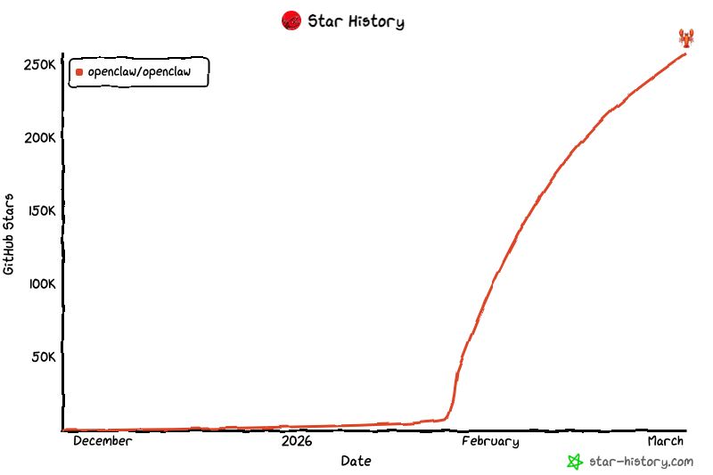

基于 Openclaw 与 MOI 的
自动化数据处理解决方案

过去处理数据，需要人工登录线上环境、手动操作 MOI 或编写复杂脚本，费时费力。
让最火的 AI "大脑"（Openclaw），握住了我们最强的业务"瑞士军刀"（MOI）。
"帮我解析 xxx 文件夹下 100 份简历，找出年龄≤40、5–10 年互联网经验、有 AI 产品经验的候选人。"
自动接管 → 批量读取文件 → 唤起 MOI → 利用非结构化数据解析能力精准提取并多条件匹配
匹配候选人名单 + 核心亮点摘要，无需手动筛选任何一份简历
全自动、零代码 — 将原本需要几小时的人工筛选，压缩至几分钟
只要能用语言描述清楚需求，就无需学习或亲自操作 MOI
用户只关注最终返回的结果，繁琐执行过程彻底外包给 AI
自动执行不等于黑盒——所有处理步骤均可登录 MOI 回溯审计